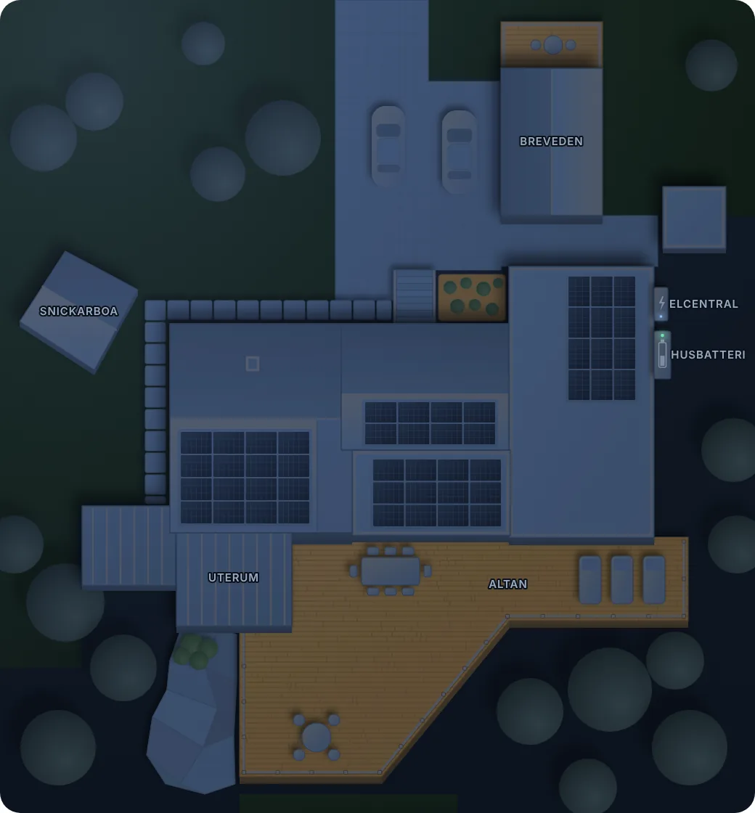

Dra en punkt för att flytta den. Ett valt fönster får en liten knopp: dra den för att vrida åt vilket håll ljuset faller ut. Tryck på en punkt för exakta värden och pilar för små steg. En utelampa kan vara fristående eller sitta på en vägg – då lyser den bara ut från väggen. Dra de små fyrkanterna i fönstrets ändar för att göra ett fönster eller en dörr bredare eller smalare. Rutorna med streckad kant är fälten med siffror – det som ligger under dem syns inte i dashboarden.
Vilka lampor tänder fönstret? Tryck på ett fönster och välj Valda lampor under bilden. Gröna fönster följer egna lampor, orange följer hela rummet. Välj en lampa i Prova för att se vilka fönster just den tänder.

Läser in…